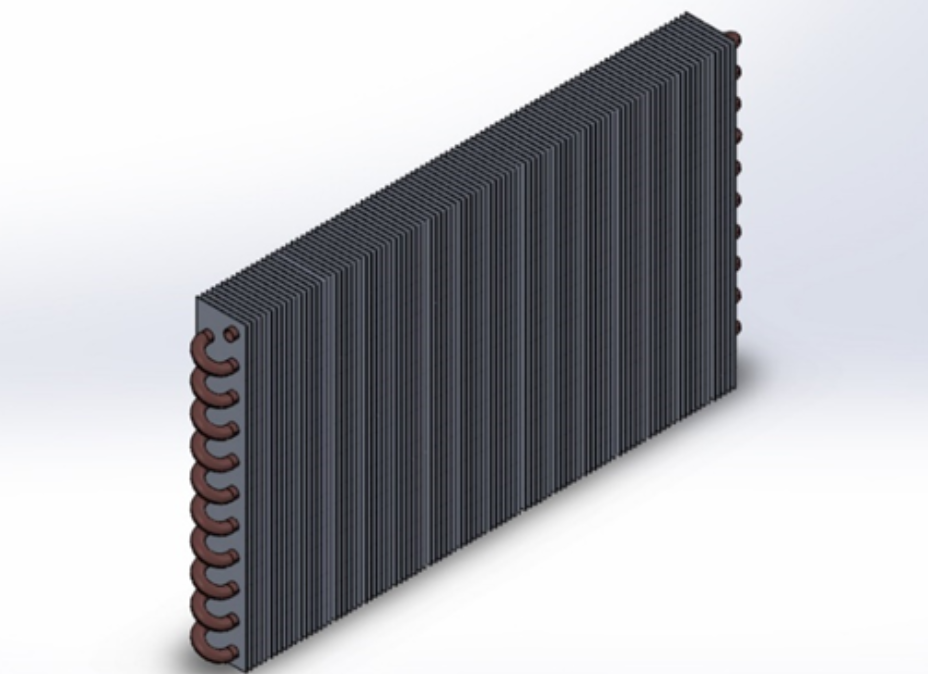

Extra-Curricular Activities
ISRO GSAT30 3D Model

Finned Tube Heat Exchanger 3D Model
Passionate Energy and Petroleum Engineer, I have a strong interest in Energy Transition. My key technical skills include Process Engineering and Design, Hydrocarbon processing, CCUS, Decarbonization Strategies, and Reservoir Engineering, in the upstream energy sector. My current and past project experience include technical work in Carbon Emission Analysis, Carbon Capture and Storage and Energy Management.
ISRO GSAT30 3D Model
Finned Tube Heat Exchanger 3D Model